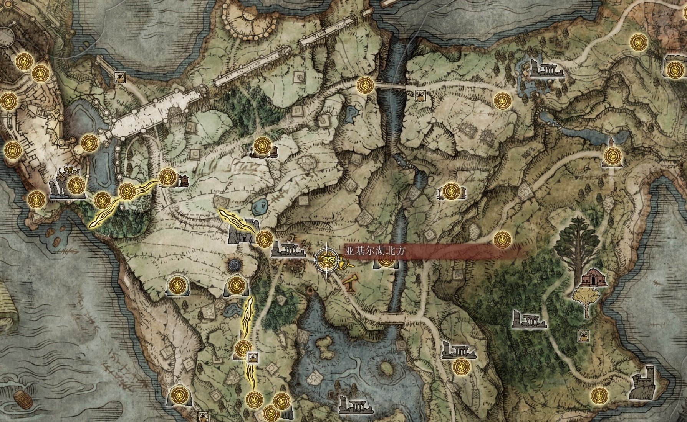
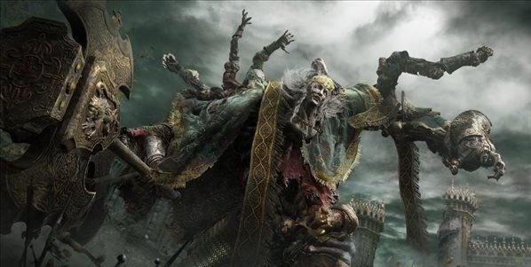

| 返回地图 | 宁姆格福 | 区域介绍 |
|---|---|---|
|  | 穿过史东薇尔城最后的屏障，来到水雾氤氲的湖之利耶尼亚。这里远不如宁姆格福那么辽阔宽广，站在山坡上，整个利耶尼亚尽收眼底：东西两侧狭长的山岗，还有北边高耸的格密尔火山，包围着利耶尼亚湖，像围着一条静谧的蓝灰色绸缎。而在这片蓝灰色之上，伫立着整个交界地的魔法殿堂--雷亚卢卡利亚学院。 卡利亚的魔法师探寻着星与月的魔法，在这座魔法城堡里仰望着整个狭间之地最明朗的夜空。每当夜晚降临，众星拱月，连巨大的黄金树枝桠都难以遮盖这抹神秘的光辉。 如果说最深沉的秘密需要美丽的外衣包裹，那雷亚卢卡利亚便是不需要装饰就足以冠绝的秘密。 |
|
| 区域头目 | 头目介绍 | |
|  | 由于在宁姆格福无休止地收割肉体，让整片土地渴望向这位接肢之王发起复仇。葛孚雷孙子辈人物，由于血脉稀薄所以力量弱小。但是野心很大，破碎战争时曾进攻王城结果被打的落花流水装成女人跑路，挑战拉塔恩不敌，挑战玛莲妮亚也不敌靠舔鞋才得以回自己领地，无奈之下只能靠接肢体增强自己的力量 。 | |